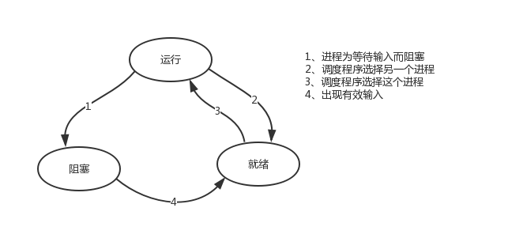

本节的主题是基于单线程来实现并发，即只用一个主线程（很明显可利用的cpu只有一个）情况下实现并发，为此我们需要先回顾下并发的本质：切换+保存状态
cpu正在运行一个任务，会在两种情况下切走去执行其他的任务（切换由操作系统强制控制），一种情况是该任务发生了阻塞，另外一种情况是该任务计算的时间过长或有一个优先级更高的程序替代了它
协程本质上就是一个线程，以前线程任务的切换是由操作系统控制的，遇到I/O自动切换，现在我们用协程的目的就是较少操作系统切换的开销（开关线程，创建寄存器、堆栈等，在他们之间进行切换等），在我们自己的程序里面来控制任务的切换。

ps：在介绍进程理论时，提及进程的三种执行状态，而线程才是执行单位，所以也可以将上图理解为线程的三种状态
一：其中第二种情况并不能提升效率，只是为了让cpu能够雨露均沾，实现看起来所有任务都被“同时”执行的效果，如果多个任务都是纯计算的，这种切换反而会降低效率。为此我们可以基于yield来验证。yield本身就是一种在单线程下可以保存任务运行状态的方法，我们来简单复习一下：
#1 yiled可以保存状态，yield的状态保存与操作系统的保存线程状态很像，但是yield是代码级别控制的，更轻量级
#2 send可以把一个函数的结果传给另外一个函数，以此实现单线程内程序之间的切换 import time
def func1():
for i in range(11):
#yield
print('这是我第%s次打印啦' % i)
time.sleep(1)
def func2():
g = func1()
#next(g)
for k in range(10):
print('哈哈，我第%s次打印了' % k)
time.sleep(1)
#next(g)
#不写yield，下面两个任务是执行完func1里面所有的程序才会执行func2里面的程序，有了yield，我们实现了两个任务的切换+保存状态
func1()
func2()
通过yield实现任务切换+保存现场通过yield实现任务切换+保存现场
# 计算密集型：串行与协程的效率对比
import time
def task1():
res = 1
for i in range(1,100000):
res += i
def task2():
res = 1
for i in range(1,100000):
res -= i
start_time = time.time()
task1()
task2()
print(time.time()-start_time)
import time
def task1():
res = 1
for i in range(1, 100000):
res += i
yield res
def task2():
g = task1()
res = 1
for i in range(1, 100000):
res -= i
next(g)
start_time = time.time()
task2()
print(time.time() - start_time)IO密集型 串行与协程的对比
二：第一种情况的切换。在任务一遇到io情况下，切到任务二去执行，这样就可以利用任务一阻塞的时间完成任务二的计算，效率的提升就在于此。
import time
def func1():
while True:
print('func1')
yield
def func2():
g=func1()
for i in range(10000000):
i+1
next(g)
time.sleep(3)
print('func2')
start=time.time()
func2()
stop=time.time()
print(stop-start)
yield不能检测IO，实现遇到IO自动切换yield不能检测IO，实现遇到IO自动切换
协程就是告诉Cpython解释器，你不是nb吗，不是搞了个GIL锁吗，那好，我就自己搞成一个线程让你去执行，省去你切换线程的时间，我自己切换比你切换要快很多，避免了很多的开销，对于单线程下，我们不可避免程序中出现io操作，但如果我们能在自己的程序中（即用户程序级别，而非操作系统级别）控制单线程下的多个任务能在一个任务遇到io阻塞时就切换到另外一个任务去计算，这样就保证了该线程能够最大限度地处于就绪态，即随时都可以被cpu执行的状态，相当于我们在用户程序级别将自己的io操作最大限度地隐藏起来，从而可以迷惑操作系统，让其看到：该线程好像是一直在计算，io比较少，从而更多的将cpu的执行权限分配给我们的线程。
协程的本质就是在单线程下，由用户自己控制一个任务遇到io阻塞了就切换另外一个任务去执行，以此来提升效率。为了实现它，我们需要找寻一种可以同时满足以下条件的解决方案：
#1. 可以控制多个任务之间的切换，切换之前将任务的状态保存下来，以便重新运行时，可以基于暂停的位置继续执行。
#2. 作为1的补充：可以检测io操作，在遇到io操作的情况下才发生切换协程：是单线程下的并发，又称微线程，纤程。英文名Coroutine。一句话说明什么是线程：协程是一种用户态的轻量级线程，即协程是由用户程序自己控制调度的。、
需要强调的是：
#1. python的线程属于内核级别的，即由操作系统控制调度（如单线程遇到io或执行时间过长就会被迫交出cpu执行权限，切换其他线程运行）
#2. 单线程内开启协程，一旦遇到io，就会从应用程序级别（而非操作系统）控制切换，以此来提升效率（！！！非io操作的切换与效率无关）对比操作系统控制线程的切换，用户在单线程内控制协程的切换
优点如下：
#1. 协程的切换开销更小，属于程序级别的切换，操作系统完全感知不到，因而更加轻量级
#2. 单线程内就可以实现并发的效果，最大限度地利用cpu缺点如下：
#1. 协程的本质是单线程下，无法利用多核，可以是一个程序开启多个进程，每个进程内开启多个线程，每个线程内开启协程
#2. 协程指的是单个线程，因而一旦协程出现阻塞，将会阻塞整个线程总结协程特点：
如果我们在单个线程内有20个任务，要想实现在多个任务之间切换，使用yield生成器的方式过于麻烦（需要先得到初始化一次的生成器，然后再调用send。。。非常麻烦），而使用greenlet模块可以非常简单地实现这20个任务直接的切换
#安装
pip3 install greenlet#真正的协程模块就是使用greenlet完成的切换
from greenlet import greenlet
def eat(name):
print('%s eat 1' %name) #2
g2.switch('taibai') #3
print('%s eat 2' %name) #6
g2.switch() #7
def play(name):
print('%s play 1' %name) #4
g1.switch() #5
print('%s play 2' %name) #8
g1=greenlet(eat)
g2=greenlet(play)
g1.switch('taibai')#可以在第一次switch时传入参数，以后都不需要 1单纯的切换（在没有io的情况下或者没有重复开辟内存空间的操作），反而会降低程序的执行速度
#顺序执行
import time
def f1():
res=1
for i in range(100000000):
res+=i
def f2():
res=1
for i in range(100000000):
res*=i
start=time.time()
f1()
f2()
stop=time.time()
print('run time is %s' %(stop-start)) #10.985628366470337
#切换
from greenlet import greenlet
import time
def f1():
res=1
for i in range(100000000):
res+=i
g2.switch()
def f2():
res=1
for i in range(100000000):
res*=i
g1.switch()
start=time.time()
g1=greenlet(f1)
g2=greenlet(f2)
g1.switch()
stop=time.time()
print('run time is %s' %(stop-start)) # 52.763017892837524
效率对比效率对比
greenlet只是提供了一种比generator更加便捷的切换方式，当切到一个任务执行时如果遇到io，那就原地阻塞，仍然是没有解决遇到IO自动切换来提升效率的问题。
上面这个图，是协程真正的意义，虽然没有规避固有的I/O时间，但是我们使用这个时间来做别的事情了，一般在工作中我们都是进程+线程+协程的方式来实现并发，以达到最好的并发效果，如果是4核的cpu，一般起5个进程，每个进程中20个线程（5倍cpu数量），每个线程可以起500个协程，大规模爬取页面的时候，等待网络延迟的时间的时候，我们就可以用协程去实现并发。 并发数量 = 5 * 20 * 500 = 50000个并发，这是一般一个4cpu的机器最大的并发数。nginx在负载均衡的时候最大承载量就是5w个
单线程里的这20个任务的代码通常会既有计算操作又有阻塞操作，我们完全可以在执行任务1时遇到阻塞，就利用阻塞的时间去执行任务2。。。。如此，才能提高效率，这就用到了Gevent模块。
#安装
pip3 install geventGevent 是一个第三方库，可以轻松通过gevent实现并发同步或异步编程，在gevent中用到的主要模式是Greenlet, 它是以C扩展模块形式接入Python的轻量级协程。 Greenlet全部运行在主程序操作系统进程的内部，但它们被协作式地调度。
#用法
g1=gevent.spawn(func,1,2,3,x=4,y=5)创建一个协程对象g1，spawn括号内第一个参数是函数名，如eat，后面可以有多个参数，可以是位置实参或关键字实参，都是传给函数eat的，spawn是异步提交任务
g2=gevent.spawn(func2)
g1.join() #等待g1结束
g2.join() #等待g2结束 有人测试的时候会发现，不写第二个join也能执行g2，是的，协程帮你切换执行了，但是你会发现，如果g2里面的任务执行的时间长，但是不写join的话，就不会执行完等到g2剩下的任务了
#或者上述两步合作一步：gevent.joinall([g1,g2])
g1.value#拿到func1的返回值遇到IO阻塞时会自动切换任务
import gevent
def eat(name):
print('%s eat 1' %name)
gevent.sleep(2)
print('%s eat 2' %name)
def play(name):
print('%s play 1' %name)
gevent.sleep(1)
print('%s play 2' %name)
g1=gevent.spawn(eat,'egon')
g2=gevent.spawn(play,name='egon')
g1.join()
g2.join()
#或者gevent.joinall([g1,g2])
print('主')
遇到I/O切换遇到I/O切换
上例gevent.sleep(2)模拟的是gevent可以识别的io阻塞,
而time.sleep(2)或其他的阻塞,gevent是不能直接识别的需要用下面一行代码,打补丁,就可以识别了
from gevent import monkey;monkey.patch_all()必须放到被打补丁者的前面，如time，socket模块之前
或者我们干脆记忆成：要用gevent，需要将from gevent import monkey;monkey.patch_all()放到文件的开头
from gevent import monkey;monkey.patch_all() #必须写在最上面，这句话后面的所有阻塞全部能够识别了
import gevent #直接导入即可
import time
def eat(): #print()
print('eat food 1')
time.sleep(2) #加上mokey就能够识别到time模块的sleep了
print('eat food 2')
def play():
print('play 1')
time.sleep(1) #来回切换，直到一个I/O的时间结束，这里都是我们个gevent做得，不再是控制不了的操作系统了。
print('play 2')
g1=gevent.spawn(eat)
g2=gevent.spawn(play_phone)
gevent.joinall([g1,g2])
print('主')我们可以用threading.current_thread().getName()来查看每个g1和g2，查看的结果为DummyThread-n，即假线程，虚拟线程，其实都在一个线程里面
进程线程的任务切换是由操作系统自行切换的，你自己不能控制
协程是通过自己的程序（代码）来进行切换的，自己能够控制，只有遇到协程模块能够识别的IO操作的时候，程序才会进行任务切换，实现并发效果，如果所有程序都没有IO操作，那么就基本属于串行执行了。
from gevent import spawn,joinall,monkey;monkey.patch_all()
import time
def task(pid):
"""
Some non-deterministic task
"""
time.sleep(0.5)
print('Task %s done' % pid)
def synchronous():
for i in range(10):
task(i)
def asynchronous():
g_l=[spawn(task,i) for i in range(10)]
joinall(g_l)
if __name__ == '__main__':
print('Synchronous:')
synchronous()
print('Asynchronous:')
asynchronous()
#上面程序的重要部分是将task函数封装到Greenlet内部线程的gevent.spawn。 初始化的greenlet列表存放在数组threads中，此数组被传给gevent.joinall 函数，后者阻塞当前流程，并执行所有给定的greenlet。执行流程只会在 所有greenlet执行完后才会继续向下走。
协程：同步异步对比协程：同步异步对比
from gevent import monkey;monkey.patch_all()
import gevent
import requests
import time
def get_page(url):
print('GET: %s' %url)
response=requests.get(url)
if response.status_code == 200:
print('%d bytes received from %s' %(len(response.text),url))
start_time=time.time()
gevent.joinall([
gevent.spawn(get_page,'https://www.python.org/'),
gevent.spawn(get_page,'https://www.yahoo.com/'),
gevent.spawn(get_page,'https://github.com/'),
])
stop_time=time.time()
print('run time is %s' %(stop_time-start_time))
协程应用：爬虫协程应用：爬虫
将上面的程序最后加上一段串行的代码看看效率：如果你的程序不需要太高的效率，那就不用什么并发啊协程啊之类的东西。
print('--------------------------------')
s = time.time()
requests.get('https://www.python.org/')
requests.get('https://www.yahoo.com/')
requests.get('https://github.com/')
t = time.time()
print('串行时间>>',t-s)通过gevent实现单线程下的socket并发（from gevent import monkey;monkey.patch_all()一定要放到导入socket模块之前，否则gevent无法识别socket的阻塞）
一个网络请求里面经过多个时间延迟time
from gevent import monkey;monkey.patch_all()
from socket import *
import gevent
#如果不想用money.patch_all()打补丁,可以用gevent自带的socket
# from gevent import socket
# s=socket.socket()
def server(server_ip,port):
s=socket(AF_INET,SOCK_STREAM)
s.setsockopt(SOL_SOCKET,SO_REUSEADDR,1)
s.bind((server_ip,port))
s.listen(5)
while True:
conn,addr=s.accept()
gevent.spawn(talk,conn,addr)
def talk(conn,addr):
try:
while True:
res=conn.recv(1024)
print('client %s:%s msg: %s' %(addr[0],addr[1],res))
conn.send(res.upper())
except Exception as e:
print(e)
finally:
conn.close()
if __name__ == '__main__':
server('127.0.0.1',8080)
服务端
服务端服务端
from socket import *
client=socket(AF_INET,SOCK_STREAM)
client.connect(('127.0.0.1',8080))
while True:
msg=input('>>: ').strip()
if not msg:continue
client.send(msg.encode('utf-8'))
msg=client.recv(1024)
客户端客户端
from threading import Thread
from socket import *
import threading
def client(server_ip,port):
c=socket(AF_INET,SOCK_STREAM) #套接字对象一定要加到函数内，即局部名称空间内，放在函数外则被所有线程共享，则大家公用一个套接字对象，那么客户端端口永远一样了
c.connect((server_ip,port))
count=0
while True:
c.send(('%s say hello %s' %(threading.current_thread().getName(),count)).encode('utf-8'))
msg=c.recv(1024)
print(msg.decode('utf-8'))
count+=1
if __name__ == '__main__':
for i in range(500):
t=Thread(target=client,args=('127.0.0.1',8080))
t.start()
多线程并发多个客户端，去请求上面的服务端是没问题的多线程并发多个客户端，去请求上面的服务端是没问题的